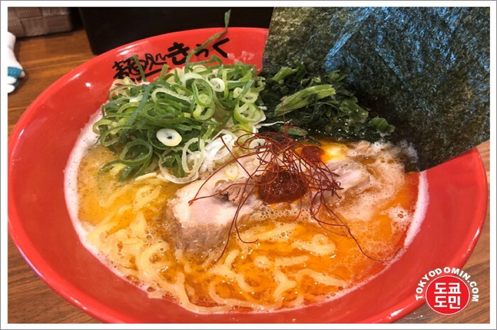
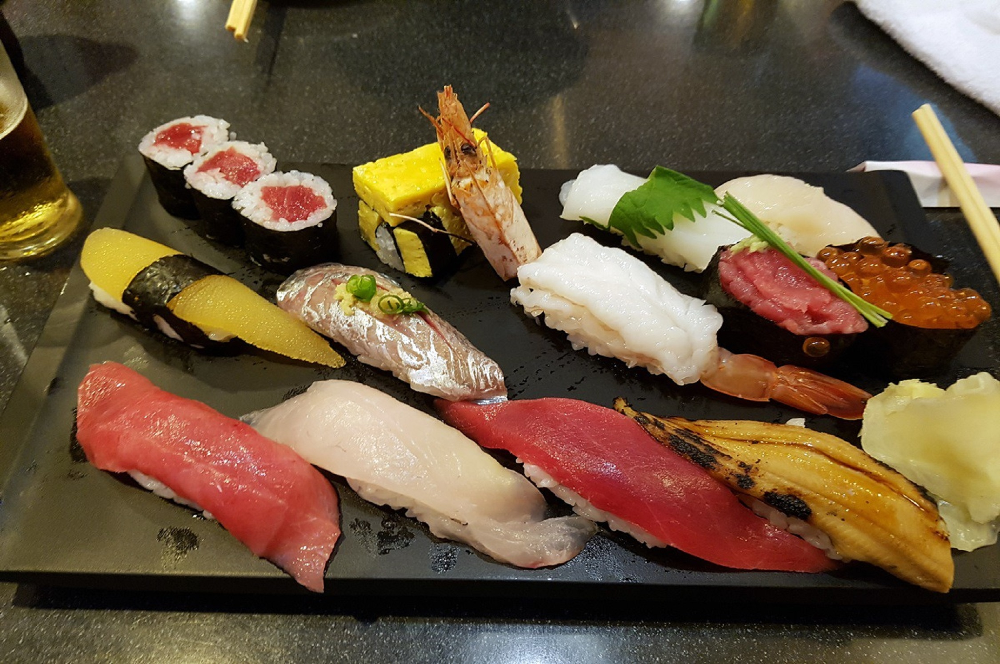
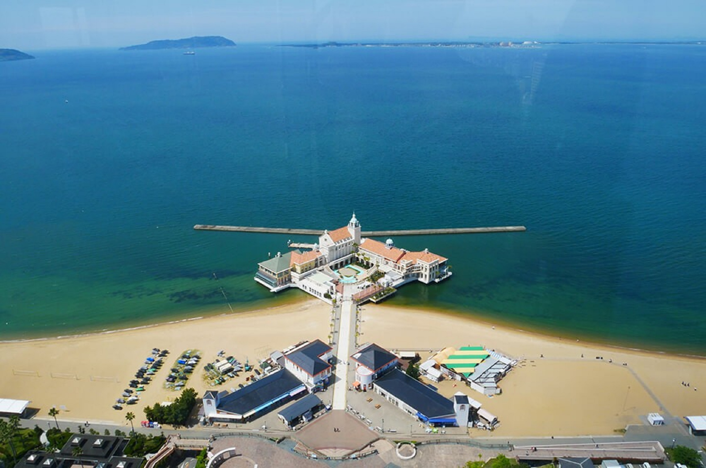
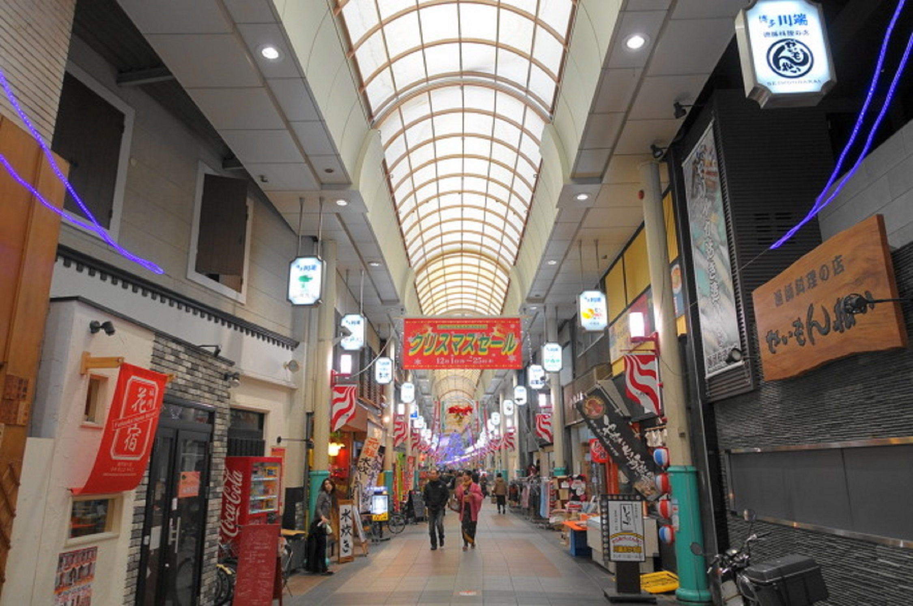
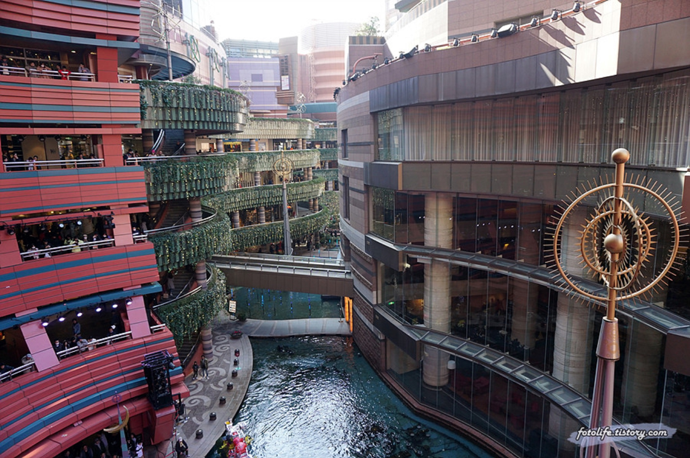

음식별

만화나 영화에서 볼법한 포장마차들이 매우 많다함!
여기서 저녁먹을겸 술 딱 걸치고 숙소로 귀가~
여기서 저녁먹을겸 술 딱 걸치고 숙소로 귀가~

우동 인기만점 맛집!
#미슐랭
웨이팅 한시간 걸려서 먹고 후회 안하는 맛집!
#미슐랭
웨이팅 한시간 걸려서 먹고 후회 안하는 맛집!

도톤보리 근처 오코노미야끼 맛집!
오사카 스타일 오코노미야키는 뭐가 다를까?
오사카 스타일 오코노미야키는 뭐가 다를까?

오사카의 맛 라멘 키라쿠
(스카이빌딩)에 있다고함
일본에 갔는데 라멘은 먹어야지?
(스카이빌딩)에 있다고함
일본에 갔는데 라멘은 먹어야지?

리뷰 6천개 넘는 스시집!
더 설명이 필요한가..?
스시 먹어봐야지 !
더 설명이 필요한가..?
스시 먹어봐야지 !
장소별

공원 연못에 떠 있는 3개의 섬과
이 섬들을 이어주는 4개의 다리
역사를 느끼면서 자연을 즐길 수 있음.
이 섬들을 이어주는 4개의 다리
역사를 느끼면서 자연을 즐길 수 있음.

근처에 후쿠오카 타워도 있어서
바다보고 사진도 찰칵찰칵
분위기 좋고 한적한 바닷가에서 여유를 즐겨보자
바다보고 사진도 찰칵찰칵
분위기 좋고 한적한 바닷가에서 여유를 즐겨보자

온천에서 푹쉬고 주변 돌아다니면서 구경하자!
들어갈 생각만 해도 노곤노곤~
들어갈 생각만 해도 노곤노곤~

후쿠오카를 대표하는 전통 재래시장이라함
다양한 먹거리와 생필품 기념품 등등 있다하니
들렸다가 사고싶은거 사고나서
집으로 고고씽 하면 될듯!
다양한 먹거리와 생필품 기념품 등등 있다하니
들렸다가 사고싶은거 사고나서
집으로 고고씽 하면 될듯!

도톤보리 쇼핑몰 상가밀집 지역이기에
돌아다니며 구경
여행 왔으면 기념품 챙겨가야지~
돌아다니며 구경
여행 왔으면 기념품 챙겨가야지~
테마별

일본 유니버셜 스튜디오는
꼭 가보라고 하는 말이 있어!
설명 안해도 알테니 스킵!
꼭 가보라고 하는 말이 있어!
설명 안해도 알테니 스킵!

오사카 랜드마크!
오사카를 왔는데 오사카 성을 안본다?!
오사카를 왔는데 오사카 성을 안본다?!

도시 극장 컨셉으로 개장한 커낼시티라는데
다양한 쇼핑몰과 식당 카페 등등 모여 있고
일본 3대 라멘을 만나볼수있다함!
다양한 쇼핑몰과 식당 카페 등등 모여 있고
일본 3대 라멘을 만나볼수있다함!

마을 곳곳이 짱구 투성이!
짱구 덕후 다모여!!
짱구에 나왔던 곳들, 여러 테마 스토어들 구경해보자!
짱구 덕후 다모여!!
짱구에 나왔던 곳들, 여러 테마 스토어들 구경해보자!